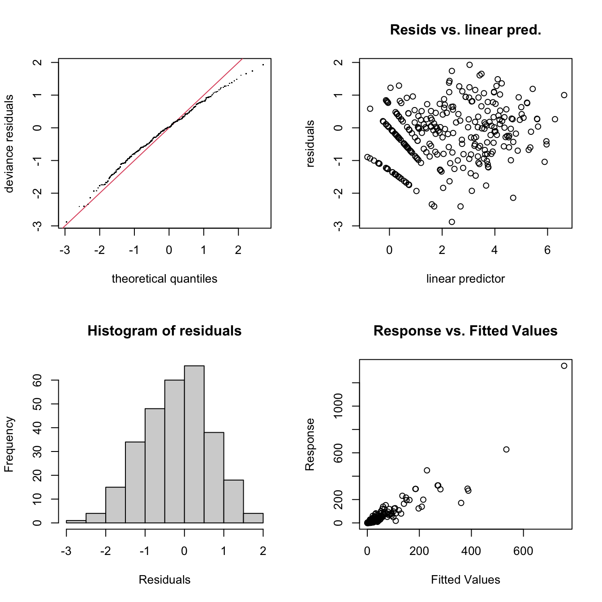
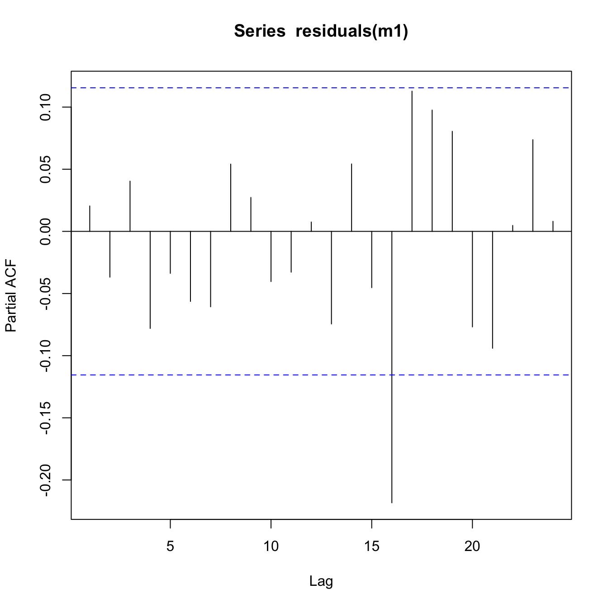

Fit GAM models of spore counts
Load libraries
library("tidyverse")
library("broom")
library("ggplot2")
library("ggpubr")
library("gratia")
library("here")
library("mgcv")
theme_set(theme_pubclean())Load data
load(here("data/mod_dat.Rdata"))Inspect the mod_dat object
mod_dat %>%
distinct(field, trap_coord, .keep_all = TRUE) %>%
select(trap_coord,
trap_degrees,
degree_dif,
wind_degrees,
wind_speed,
distance_m) %>%
print(n = Inf)## # A tibble: 24 × 6
## trap_coord trap_degrees degree_dif wind_degrees wind_speed distance_m
## <chr> <dbl> <dbl> <dbl> <dbl> <dbl>
## 1 N 0 76.2 76.2 5.36 100
## 2 E 90 13.8 76.2 5.36 100
## 3 W 270 194. 76.2 5.36 100
## 4 S 180 104. 76.2 5.36 100
## 5 N 0 201. 201. 26.2 100
## 6 E 90 111. 201. 26.2 100
## 7 W 270 68.7 201. 26.2 100
## 8 S 180 21.3 201. 26.2 100
## 9 NE 45 90.3 135. 10.6 100
## 10 SE 135 0.313 135. 10.6 100
## 11 NW 315 180. 135. 10.6 100
## 12 SW 225 89.7 135. 10.6 100
## 13 N 0 35.9 35.9 14.0 100
## 14 E 90 54.1 35.9 14.0 100
## 15 W 270 234. 35.9 14.0 100
## 16 S 180 144. 35.9 14.0 100
## 17 NE 45 15.1 29.9 14.1 100
## 18 SE 135 105. 29.9 14.1 100
## 19 NW 315 285. 29.9 14.1 100
## 20 SW 225 195. 29.9 14.1 100
## 21 N 0 2.16 2.16 27.3 100
## 22 E 90 87.8 2.16 27.3 100
## 23 W 270 268. 2.16 27.3 100
## 24 S 180 178. 2.16 27.3 100Based on the use of AIC to evaluate model fit to the data, the following model best fit the data with smoothed terms for x and y, the Cartesian coordinates of the spore traps placed around the harvest fields, x and y; the smoothed time slice variables, time_slice; the wind direction in relation to the traps’ placement, degree_dif; the traps’ distance from the harvest field, distance_m; and the field and traps themselves as a random effects, field and xy.
mod_dat$xy <- as.factor(paste(mod_dat$x, mod_dat$y))
m1 <- gam(
spore_cm2 ~ s(y, x, k = 20) +
s(time_slice, k = 3) +
s(degree_dif, k = 72) +
s(distance_m, k = 4) +
s(field, xy, bs = "re"),
data = mod_dat,
select = TRUE,
method = "REML",
family = "tw"
)
m1##
## Family: Tweedie(p=1.505)
## Link function: log
##
## Formula:
## spore_cm2 ~ s(y, x, k = 20) + s(time_slice, k = 3) + s(degree_dif,
## k = 72) + s(distance_m, k = 4) + s(field, xy, bs = "re")
##
## Estimated degrees of freedom:
## 7.457 0.978 5.622 0.276 65.088 total = 80.42
##
## REML score: 664.522Inspect Model m1
Check model
gam.check(m1)
##
## Method: REML Optimizer: outer newton
## full convergence after 15 iterations.
## Gradient range [-9.230901e-05,8.243612e-05]
## (score 664.522 & scale 0.9400171).
## Hessian positive definite, eigenvalue range [2.536942e-05,215.3403].
## Model rank = 288 / 288
##
## Basis dimension (k) checking results. Low p-value (k-index<1) may
## indicate that k is too low, especially if edf is close to k'.
##
## k' edf k-index p-value
## s(y,x) 19.000 7.457 1.07 1.000
## s(time_slice) 2.000 0.978 0.90 0.235
## s(degree_dif) 71.000 5.622 0.85 0.065 .
## s(distance_m) 3.000 0.276 1.01 0.880
## s(field,xy) 192.000 65.088 NA NA
## ---
## Signif. codes: 0 '***' 0.001 '**' 0.01 '*' 0.05 '.' 0.1 ' ' 1summary(m1)##
## Family: Tweedie(p=1.505)
## Link function: log
##
## Formula:
## spore_cm2 ~ s(y, x, k = 20) + s(time_slice, k = 3) + s(degree_dif,
## k = 72) + s(distance_m, k = 4) + s(field, xy, bs = "re")
##
## Parametric coefficients:
## Estimate Std. Error t value Pr(>|t|)
## (Intercept) 0.6816 0.1136 6.002 8.59e-09 ***
## ---
## Signif. codes: 0 '***' 0.001 '**' 0.01 '*' 0.05 '.' 0.1 ' ' 1
##
## Approximate significance of smooth terms:
## edf Ref.df F p-value
## s(y,x) 7.4571 19 27.602 0.021148 *
## s(time_slice) 0.9784 2 23.559 < 2e-16 ***
## s(degree_dif) 5.6220 71 52.463 < 2e-16 ***
## s(distance_m) 0.2758 3 0.143 0.000819 ***
## s(field,xy) 65.0878 95 4.699 < 2e-16 ***
## ---
## Signif. codes: 0 '***' 0.001 '**' 0.01 '*' 0.05 '.' 0.1 ' ' 1
##
## R-sq.(adj) = 0.791 Deviance explained = 89.4%
## -REML = 664.52 Scale est. = 0.94002 n = 288The model fully converged after 10 iterations. All of the predictive factors included were significant at P > 0.05 and the smoothed predictors indicate a good fit with residuals being randomly distributed and enough basis functions for them to be properly fit. The Q-Q plot generally falls along the line indicating a sufficient fit. There is a bit of a pattern in the residual vs linear predictors but the histogram of residuals is a nice bell-shape. The response versus fitted values clusters nicely around the 1:1 line. In all, this model looks to explain the spore dispersal data very well.
Check for autocorrelation
Because the data represent spatially and temporally correlated data, it’s best to check for any autocorrelation in the residuals.
acf(residuals(m1))
pacf(residuals(m1))
This looks OK. There is no major pattern discernible in the ACF or PACF plots that show cause for concern.
Summarise and visualise model m1
draw(m1)
Predict spore dispersal
dist <- seq(0, 400, by = 100)
newd <- expand_grid(
time_slice = c(90, 180, 270),
degree_dif = 1:360,
distance_m = dist,
wind_speed = seq(0,30,5),
x = dist,
y = dist,
xy = paste(dist, -dist),
field = 1)
newd$pred_spore_cm2 <- predict(m1, newd)Visualise spore dispersal predictions
Visualise the spore dispersal predictions for traps at 0m, 100m, 200m, 300m, 400m around the harvest field for sampling times at 90, 180 and 270 minutes after harvest started.
newd %>%
mutate(pred_spore_cm2 = replace(pred_spore_cm2, pred_spore_cm2 < 0, 0)) %>%
ggplot(aes(x = as.factor(distance_m), y = pred_spore_cm2)) +
geom_violin() +
labs(x = "Distance from harvesting field (m)",
y = "Predicted Spores / cm²"
)
ggsave(
last_plot(),
file = "plots/spore_prediction.png",
w = 5,
h = 2,
scale = 1.2
)